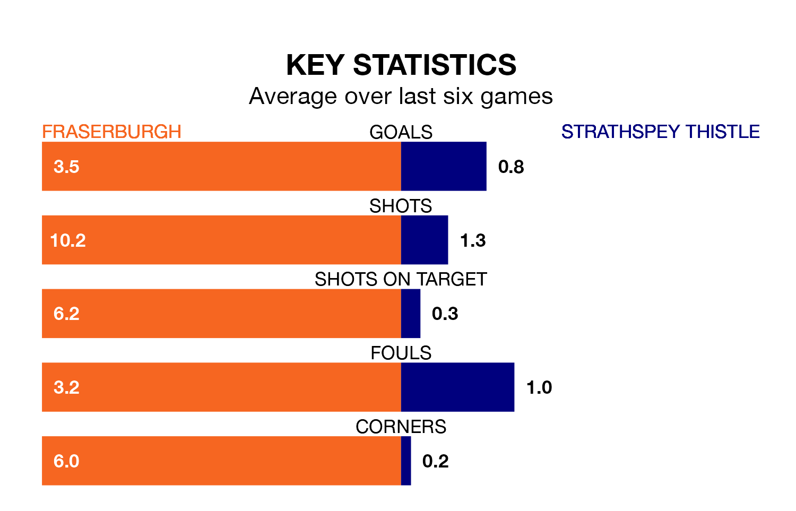

Relegation candidates Strathspey Thistle face a challenge away against high-flying Fraserburgh at Bellslea Park on Saturday.
Strathspey Thistle are rooted to the bottom of the Highland Football League table, and have picked up five wins and one draw in their 33 games to date.
The Broch, meanwhile, are third in the standings with 75 points, having won 24 and drawn three, and are three points behind table-toppers Buckie Thistle.
Fraserburgh are in exceptional form in the Highland Football League, with six wins and no losses from their last six games.
With a win and five losses over that period, Strathspey Thistle's form is much worse – they have taken three points from 18, compared to the Broch's 18.
With 91 goals in 33 games so far this season, the hosts are the league's second-highest scorers with 2.8 goals per game. And they are conceding fewer than average, letting in 37 goals at a rate of 1.1 per game.
The away side, meanwhile, are below average scorers, with 1.1 goals per game, compared to a league average of 1.8. They have conceded 3.9 goals per game.
In the last 10 years, Fraserburgh and Strathspey Thistle have played each other on 11 occasions. Fraserburgh won all of them.
On average, the Broch scored 4.4 goals and Strathspey Thistle 0.7 in those matches.
Their last meeting was on April 13, when Fraserburgh won 5-1 away.
Fraserburgh's last match was on Wednesday, a 2-0 win against Brora Rangers.
Strathspey Thistle lost 7-0 against Buckie Thistle last time out, also on Wednesday.
Updated: 15:40 (UTC), 18/04/24